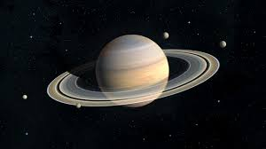

Segundo maior planeta do sistema solar, depois de Júpiter, Saturno é conhecido pelos seus anéis, formados por rocha, gelo e poeira. Sexto planeta a partir do sol, depois de Júpiter, Saturno é o planeta do sistema solar que possui muitos satélites: 145 luas, muitas delas publicadas recentemente. Composto basicamente de hidrogênio, ele possui temperatura média de -140°C, sendo que seu movimento de rotação dura 10 horas e 39 minutos e o de translação cerca de 30 anos terrestres.